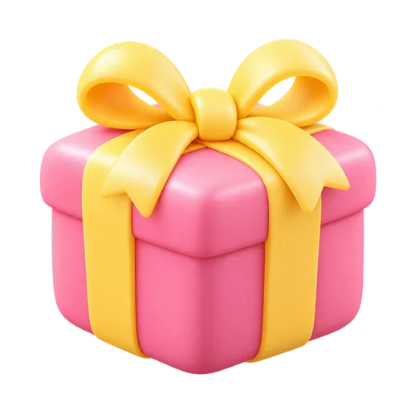

나의 크리에이터를 찾아요
이름이나 채널 이름을 입력하면 아래 목록이 바로 걸러져요.
활동 채널 본인 확인을 마친 크리에이터만 보여요.
태그
-

하루하루별하루의 놀이터 · 게임 방송을 해요.
 치지직
치지직 유튜브평균 승인 약 3시간
유튜브평균 승인 약 3시간 -
새벽달달무리
새벽달 라디오 · 밤마다 사연을 읽어 드려요.
 SOOP
SOOP 인스타그램평균 승인 약 1시간
인스타그램평균 승인 약 1시간 -
보리보리밭
보리네 부엌 · 집밥 먹방
유튜브평균 승인 약 2일 -
유나유나리
유나의 노래방 · 커버곡 라이브
치지직SOOP+2평균 승인 약 40분 -
이름이 아주 아주 긴 크리에이터입니다긴이름팬덤
아주 긴 채널 이름으로 한 줄을 넘기는 경우 · 소개도 길게 이어져요
치지직아직 승인 기록이 없어요 -
도도도도새
도도의 운동 일지 · 매일 아침 홈트
SOOP X평균 승인 약 5시간
X평균 승인 약 5시간 -
미소미소천사
미소의 작은 가게 · 수다와 일상
치지직인스타그램평균 승인 약 2시간 -
라온라온즈
라온 TV · 버튜버 토크쇼
유튜브X평균 승인 약 6시간 -
지안지안지기
지안의 서재 · 책 읽는 방송
SOOP평균 승인 약 1시간 -
나무나무늘보
나무 숲속 · 잔잔한 게임 방송
치지직유튜브+1평균 승인 약 4시간 -
솔솔방울
솔의 음악방 · 기타 연주
인스타그램평균 승인 약 20분 -
하늘하늘바라기
하늘이네 · 여행 브이로그
유튜브치지직평균 승인 약 3시간

상태 · 결과 없음
근거 규칙
| 요소 | 현재 값 | 바꿀 값(px) | 근거 규칙(ui-ux-pro-max) |
|---|---|---|---|
| 카드 사진(프로필) | 56px · 가운데 · 배너에 28 걸침 | 64px · 왼쪽 · 배너에 32 걸침 | Touch Target Size(눈에 띄는 대상은 크게) |
| 이름 · 팬덤 배지 | 이름 줄 아래에 배지 줄 따로(가운데) | 사진 오른쪽 한 줄(이름 600 + 배지 22). 이름만 말줄임 | Truncation(넘치면 말줄임, 배지는 최소 폭 44) |
| 팔로우 버튼 | 배너 모서리에 떠 있음 · 높이 28 · 그림자 | 하단 줄 오른쪽 · 높이 32 · 테두리형 · 누름 칸 44 | Touch Target Size, Touch Spacing(옆 칸과 8 이상) |
| 카드 안 줄 간격 | 6 | 8(묶음 사이) · 하단 줄 위 12 | Touch Spacing(간격 8 이상) · tokens 1절 간격 단계 |
| 카드 아래 안쪽 여백 | 16 | 24(--card-pad) | tokens 4절 카드 안쪽 |
| 평균 승인 시간 | 카드에 없음 | 하단 줄 왼쪽, 14px 회색 600(#4b5563 7.5:1) | Color Contrast(4.5:1 이상), Contrast Readability |
| 배너 없는 카드 바탕 | 퍼스널 컬러 30% 또는 ID로 정한 파스텔 | 크리에이터가 고른 테마 색(파스텔 8색) | Color Only(색만으로 구분하지 않음 — 이름·글자가 함께) |
| 팬덤 배지 색 | 팬컬러 | 테마 색 면 + 같은 색을 짙게 섞은 1px 테두리, 글자 #111827(12px) | Color Contrast |
| 카드 전체 링크 | 이름 링크가 카드 덮음 | 그대로 · 팔로우만 z-index 위(이동 안 됨) | Hover States(올리면 테두리 진해짐) · Focus States(카드에 3px 초점) |
| 격자 | 880 기둥 · 3열 · 640 이상 2열 | 1024 이상 3열 · 640 이상 2열 · 그 아래 1열(뷰포트 기준) | Horizontal Scroll(내용이 화면 폭에 맞게) |
| 결과 없음 | 그림 + 문구 + 버튼 (회색 면 큰 판) | 흰 카드 반경 16, 폭 480, 안쪽 24 간격 16 | Empty States(안내 + 다음 행동) |